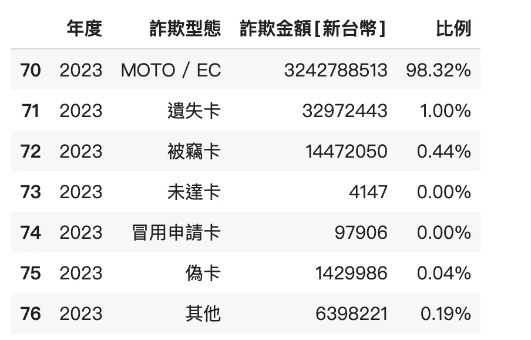
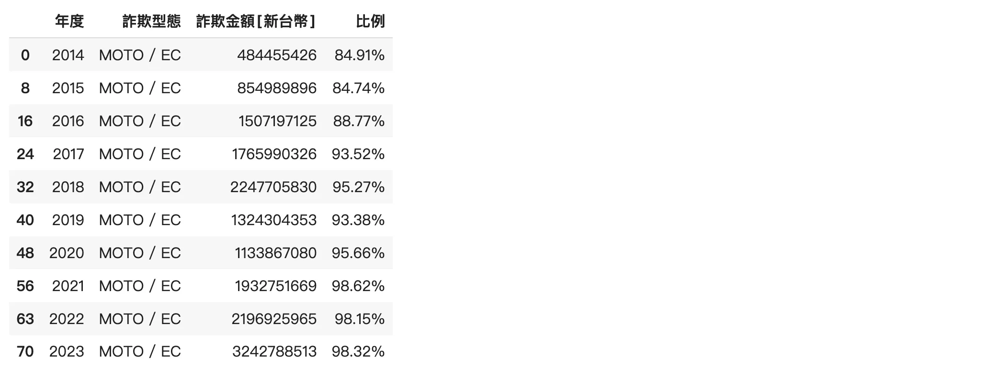
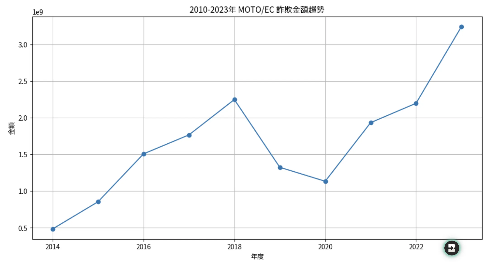
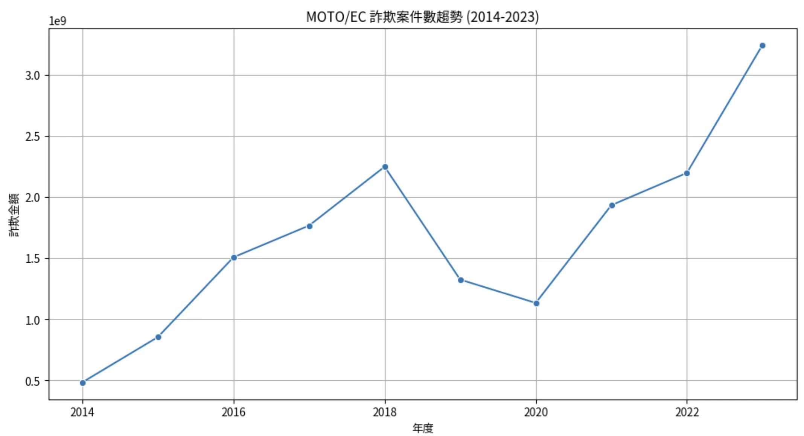
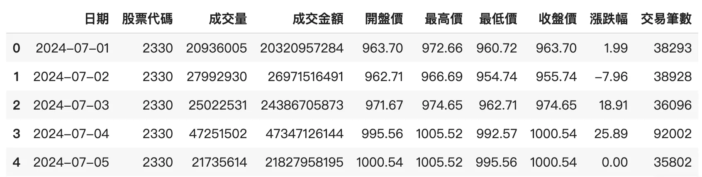
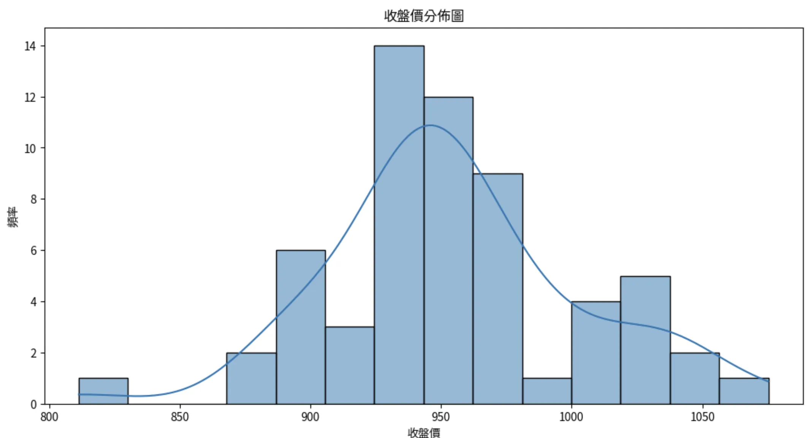
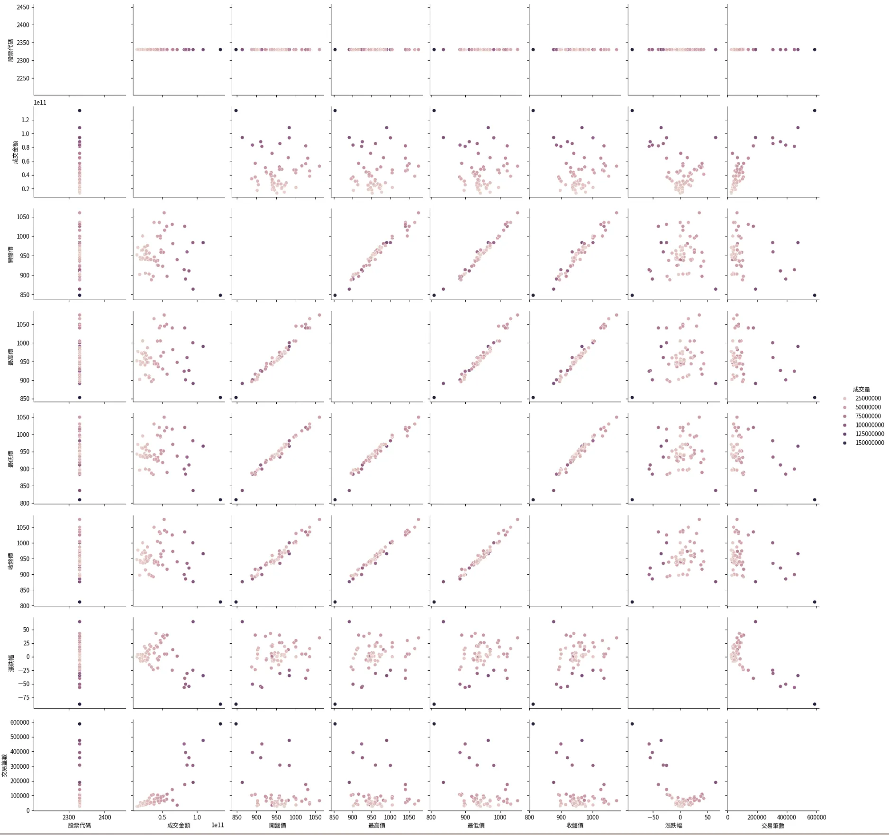

AI助你繪製更漂亮圖表！透過Seaborn，輕鬆呈現資料。從台灣信用卡盜刷數據看金額損失趨勢，用折線圖展示。Seaborn畫圖簡單，還可畫分佈圖、多因子分析圖。想看變量關係就用Seaborn吧！詳細教學可上Kaggle搜尋。
資料視覺化-Seaborn 既然有了AI，更好幫你操作繪圖。建議直接用Seaborn，更漂亮。
載入 除了載入matplotlib.pyplot之外，現在需要載入seaborn，多簡稱為sns
台灣信用卡盜刷統計 你知道每年台灣因為信用卡被盜刷，損失的金額嗎？
透過Open Data，可以看出台灣越來越有錢？
1 2 url = 'https://www.nccc.com.tw/dataDownload/09_NCCC_Member_Banks_Card_Issuing_Fraud_Types.csv'
1 2 3 4 5 6 7 8 9 10 11 12 13 14 15 ''''big5' )'年度' ]==2023]

年度從2010~2023的MOTO/EC 1 2 3 4 5 df [(df ['年度' ] >= 2010) & (df ['年度' ] <= 2023) & (df ['詐欺型態' ] == 'MOTO / EC' )]

可以看到從4億到2023已經變成32億了！誇張吧！
這種趨勢就適合用折線圖，呈現連續的統計資料
繪製折線圖 事前準備 1 2 3 4 5 6 7 8 9 10 import matplotlib.pyplot as pltinline import matplotlib.font_manager as fm'TaipeiSansTCBeta-Regular.ttf' )in fm.fontManager.ttflist]'font' , family='Taipei Sans TC Beta' )
Matplotlib繪製 先以Matplotlib繪製，使用plot():
x：X 軸的數據，通常是一個序列或數組。
y：Y 軸的數據，與 X 軸數據相對應。
1 2 3 4 5 6 7 8 9 10 11 x =moto_ec_df['年度' ], y =moto_ec_df['詐欺金額[新台幣]' ], marker ='o' )'2010-2023年 MOTO/EC 詐欺金額趨勢' )'年度' )'金額' )True )

Seaborn繪製 再使用Seaborn，基本上只是把plot() 改成lineplot() ，圖也是差不多的
1 2 3 4 5 6 7 8 9 10 11 12 13 x ='年度' , y ='詐欺金額[新台幣]' , data =moto_ec_df, marker ='o' )'MOTO/EC 詐欺案件數趨勢 (2014-2023)' )'年度' )'詐欺金額' )True )

Seaborn可以畫什麼酷圖 以台股2330台積電這兩個月的每日資料來做統計(資料使用findmind先抓下來了)
1 2 df_stock = pd.read_csv ('/content/台灣股價資料表.csv' ).head ()

分佈圖 1 2 3 4 5 6 7 8 9 10 # prompt: 畫分佈圖figure (figsize=(12 , 6 ))histplot (df_stock['收盤價' ], kde=True)title ('收盤價分佈圖' )xlabel ('收盤價' )ylabel ('頻率' )show ()

多因子分析圖 hue 為圖表依據，這裡以成交量為hue ，可以看個成交量之間的二因子分析
1 sns .pairplot(data =df_stock,hue='成交量')

總結 簡單來說，如果繪製的是簡單圖形，可以使用Matplotlib或Seaborn都可以。如果要查看變量之間的關係，建議使用Seaborn，有更多的圖形工具，來觀察結果。
Seaborn Cheat Sheet 如果要詳細的Seaborn教學，Kaggle上一樣有很多人的用法整理！
https://www.kaggle.com/code/themlphdstudent/cheat-sheet-seaborn-charts